Edge
Collected by Jianan, 2019. 本章节会实时收录全球科技动态。部分文字从原文直接引用，如有侵权，立即删除。本文仅供个人参考学习，不作商业用途。
- Edge
- 20190629 AI-aided high speed navigation for drone
- 20190628 DeepMind 在多智能体强化学习的新进展
- 20190626 哈佛发布新一代最轻飞行机器人 RoboBee X-Wing
- 20190625 第四代树莓派发布
- 20190616 世界首个触觉传输遥操作机器手
- 20190615 基于视觉控制，40美元开源无传感器机械臂
- 20190614 Google: Weight Agnostic Neural Networks
- 20190602 Open Source Deep Learning-powered Visual Navigation Engine for UAVs
- 20190601 Closing the Sim-to-Real Loop: Adapting Simulation Randomization with Real World Experience
- 20190526 IIT最新一代液压四足机器人(HyQReal)发布
- 20190525 Stanford Doggo全开源四足机器人
- 20190513 普渡大学蜂鸟机器人项目
- 20190512 微软命令行工具
- 20190511 SiamMask 快速在线对象跟踪和分割
- 20190506 深度强化学习训练双足机器人Cassie
- 20190505 Real-time 3D Human Body Motion Prediction
- 20190413 人类史上首张黑洞照片发布
- 20190407 波士顿动力定位于物流应用的Handle机器人硬件平台技术浅析
- 20190321 Robotic collectives inspired by biological cells
- 20190319 NVIDIA 推出 Jetson Nano 人工智能计算机
- 20190309 驯服自动驾驶的长尾挑战
- 20190305 MIT Mini Cheetah Bot
- 20190304 MIT Tech Review 2019年“全球十大突破性技术”
- 20190228 中国十大2018年度科学进展
- 20190221 Learning agile and dynamic motor skills for legged robots
- 20190219 Task Agnostic Self-modelling Machines
20190629 AI-aided high speed navigation for drone
U.S. military and defense industry are betting on autonomous drone racing as the next frontier for developing AI so that it can handle high-speed navigation within tight spaces without human intervention.
20190628 DeepMind 在多智能体强化学习的新进展
智能体在多玩家电子游戏中掌握策略、理解战术以及进行团队协作是人工智能研究领域的重大挑战。我们发表在「科学」杂志上的最新论文「Human-level performance in 3D multiplayer games with population-based reinforcement learning」中，展示了智能体在强化学习领域的最新进展，在「Quake III Arena」夺旗赛（CTF）中取得了与人类水平相当的性能。这是一个复杂的多智能体环境，也是第一人称多玩家的经典三维游戏之一。这些智能体成功地与 AI 队友和人类队友协作，表现出了很高的性能，即使在训练时其反应时间，表现也与人类相当。此外，我们还展示了如何能够成功地将这些方法从研究 CTF 环境中扩展到完整的「Quake III Arena」游戏中。
20190626 哈佛发布新一代最轻飞行机器人 RoboBee X-Wing
在今天Nature杂志的封面文章中，由Robert J. Wood教授领导的哈佛大学微机器人实验室的研究人员展示了他们模拟昆虫制造的飞行机器人，这是一个四翼的蜜蜂机器人，他们称之为RoboBee X-Wing。重259毫克，比回形针还轻，翼展约3.5厘米。使用太阳能电池，只要有光源就能持续、不受束缚地飞行。
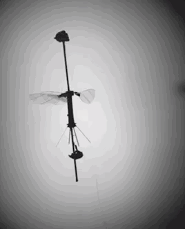
20190625 第四代树莓派发布
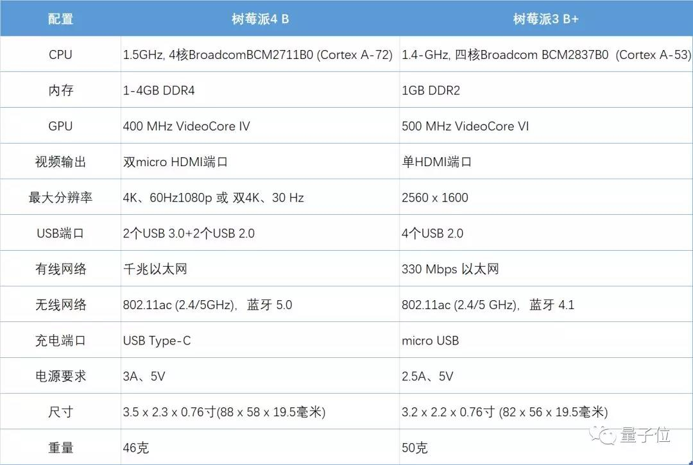
20190616 世界首个触觉传输遥操作机器手
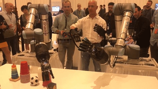
20190615 基于视觉控制，40美元开源无传感器机械臂
-
项目网站：https://craves.ai（含代码和数据）
-
论文地址：https://arxiv.org/abs/1812.00725

20190614 Google: Weight Agnostic Neural Networks
来自德国波恩-莱茵-锡格应用技术大学和谷歌大脑的一项新研究提出了一种神经网络架构搜索方法，这些网络可以在不进行显式权重训练的情况下执行各种任务。
在生物学中，早成性物种是指那些天生就有一些能力的幼生体。很多证据表明蜥蜴和蛇等动物天生就懂得逃避捕食者，鸭子在孵化后也能自己学会游泳和进食。相比之下，我们在训练智能体执行任务时，会选择一个典型的神经网络框架，并相信它有潜力为这个任务编码特定的策略。注意这里只是「有潜力」，我们还要学习权重参数，才能将这种潜力变化为能力。受到自然界早成行为及先天能力的启发，在这项工作中，研究者构建了一个能「自然」执行给定任务的神经网络。也就是说，找到一个先天的神经网络架构，然后只需要随机初始化的权重就能执行任务。研究者表示，这种不用学习参数的神经网络架构在强化学习与监督学习都有很好的表现。
其实在我们的理解中，如果我们想象神经网络架构提供的就是一个圈，那么常规学习权重就是找到一个最优「点」（或最优参数解）。但是对于不用学习权重的神经网络，它就相当于引入了一个非常强的归纳偏置，以至于，整个架构偏置到能直接解决某个问题。
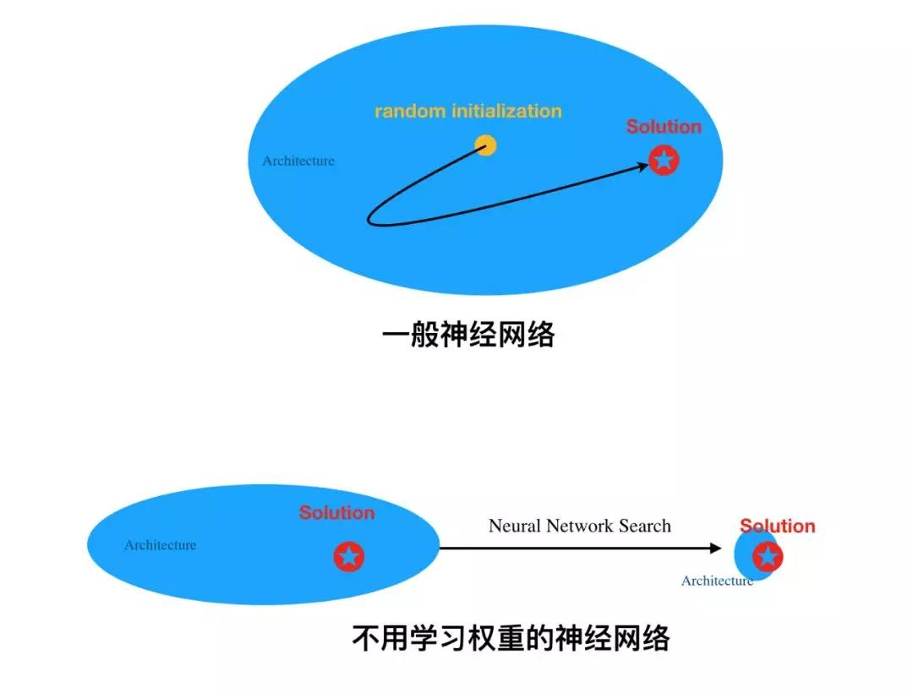

20190602 Open Source Deep Learning-powered Visual Navigation Engine for UAVs
苏黎世联邦理工学院和博洛尼亚大学的研究人员最近发明了一个名叫PULP Dronet的纳米级无人机，仅重27g，可以说是目前重量最轻的无人机。这个微型无人机搭载顶尖的深度学习算法，可以在一个端到端的闭环视觉管道上运行。
这个无人机导航系统采用一个摄像头框架，并用最先进的CNN对其进行处理。随后，它决定如何纠正无人机的姿态，使其处于当前场景的中心。同样的CNN也识别出了障碍，如果无人机感觉到迫在眉睫的威胁，就停止它。“基本上，我们的无人机可以沿着一条街道（或类似的道路，例如走廊）行驶，并在遇到意外障碍时避免碰撞和刹车，”研究人员说：“与以前的口袋飞行机器人相比，我们的系统提供的真正飞跃是，实现自主导航所需的所有操作都是直接在机身上执行的，不需要人工操作人员，也不需要特别的基础设施（比如外部摄像机或信号），尤其是没有任何用于计算的远程基站（比如远程笔记本电脑）。”
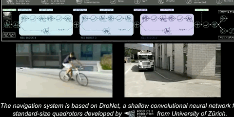
-
参考来源：https://techxplore.com/news/2019-05-pulp-dronet-gram-nano-uav-insects.html
-
论文地址：https://arxiv.org/pdf/1905.04166.pdf
-
GitHub地址：https://github.com/pulp-platform/pulp-dronet
20190601 Closing the Sim-to-Real Loop: Adapting Simulation Randomization with Real World Experience
来自西雅图NVIDIA器人研究实验室的研究人员正在展示一种新的概念强化学习方法，旨在通过仿真训练来提高机器人在现实世界中的表现。
在他们的实验中，NVIDIA研究人员使用64个NVIDIA Tesla V100 GPU集群，使用cuDNN加速的TensorFlow深度学习框架，训练机器人完成两项任务：将一个挂钩放进一个洞，打开一个抽屉。对于场景的模拟，该团队使用了NVIDIA FleX物理引擎。
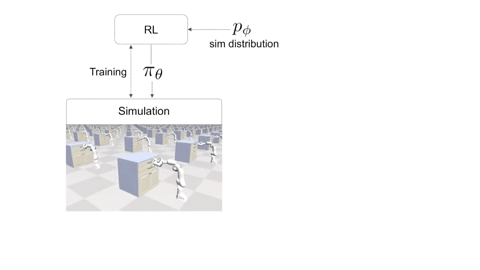
机器人的整个学习过程大致是这样的，机器人首先在模拟环境中进行建模仿真，并且在虚拟环境中进行不断地训练，将测试得到的数据下载到机器人上，当在真实机器人上尝试学习任务时，系统准确观察它是如何失败的，并将失败的数据与模拟数据进行对比，将结果返回到学习框架进行优化模拟以获得更接近真实的模拟参数。
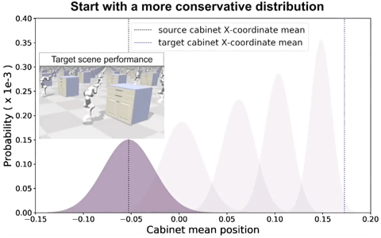
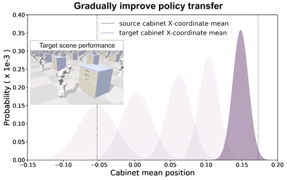
得益于深度学习框架的黑盒形态，虚拟环境的构建者可以摆脱复杂的物理定律、具体的数学模型构建，将这些虚拟环境的参数调整纳入到深度学习框架，经过不断地迭代后，系统能够识别出与现实世界中观察到的更接近的模拟参数，从而取得成功，进一步打通了虚拟与现实之间的隔阂。这为构建更为真实的虚拟环境和更具效率的机器人学习提供了另一种手段。
20190526 IIT最新一代液压四足机器人(HyQReal)发布
Istituto Italiano di Tecnologia 意大利技术研究院
5月23日，意大利技术研究院（iit）的动态腿足系统实验室（Dynamic Legged System，DLS） 发布了其新一代液压四足机器人：HyQReal，并放出了一段浮夸风溢出的机器人Demo——HyQReal拖拽小型客机，展现了基于液压原理的四足机器人的高负载能力。
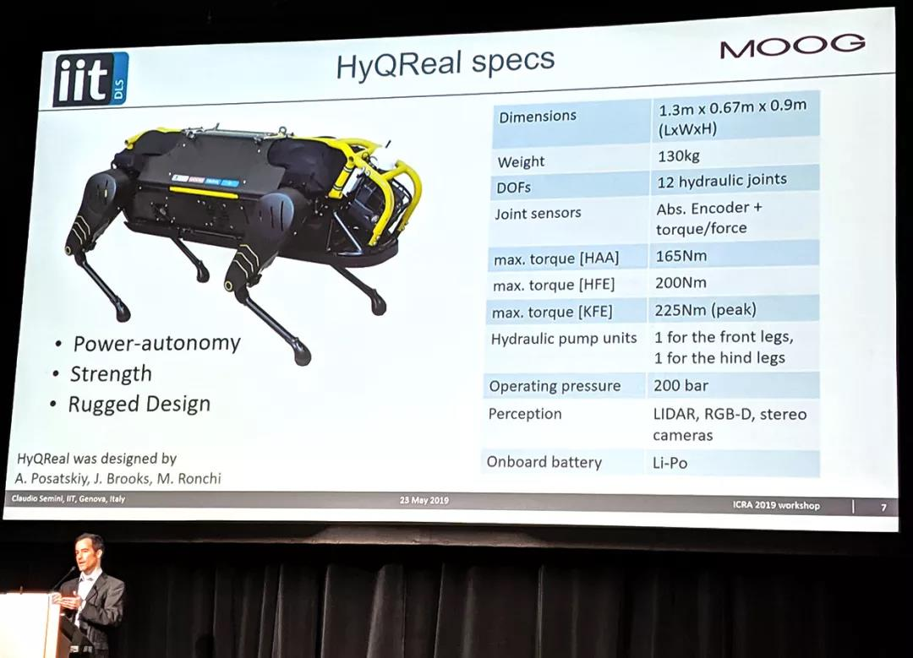
1、动力自主性(Power-autonomy)：这一点对于衡量液压机器人的性能是很重要的。简而言之，动力源外置（锂电池+电动液压泵）总会被别人诟病系统不够紧凑，不能展现真实的运动性能，实用性不够等等——HyQReal终于摆脱外接动力源的“大辫子（液压管道）”了，也意味着不用再给别人揪住缺乏动力自主性的“小辫子”，这是一个极大的进步！
2、高输出能力(Strength)：在这个紧凑的几何尺寸下（1.3mx 0.67m x 0.9m），髋关节的侧摆能够达到165Nm的峰值扭矩，髋关节的前后摆腿达到200Nm的峰值扭矩，膝关节的前后摆腿达到225Nm的峰值扭矩，这个数值对比于电机驱动的大尺寸人形机器人也是非常优秀的——体现了无法替代的液压驱动优势。但130kg的自重还是有点超过作者的预计，未来会不会影响其动态运动性能还是未知数，因为腿足式机器人一直强调的是输出扭矩/质量密度和输出功率/质量密度，要把自身的重量考虑在内。但毕竟采用了动力源内置（锂电池+液压动力源）的设计，机器人的自身重量就很难降下来。
3、坚固可靠性设计(RuggedDesign)：对于这点作者的理解是，因为采用了模块化、3D金属打印的液压驱动单元（ISA），一方面是极大提高了系统的可维护性与紧凑型，二是几乎消灭了裸露于外部的液压管道，这样就极大地提升了与外界物理交互的鲁棒性。
20190525 Stanford Doggo全开源四足机器人

Stanford Doggo，它是一种准直接驱动（quasi-direct-drive）的四足机器人，具有很强的动态运动能力。该机器人能媲美或超过当前最优多足机器人的一般性能指标。且在垂直跳跃灵敏度上，即以平均垂直速度为指标，Stanford Doggo 能与表现最好的动物相媲美，并超过此前表现最好的机器人 22%。整体设计架构重点关注准直接驱动的设计方法。复现该机器人的硬件和软件都已经开源，只需要手工工具制造和组装就能完成，总成本低于 3000 美元。
-
CAD 设计图：https://a360.co/2OBxTbH
20190513 普渡大学蜂鸟机器人项目
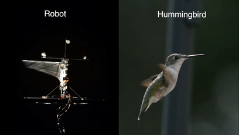
At Purdue University’s Bio-Robotics Lab, Xinyan Deng
The code is available at (this https URL). 6 pages, 10 figure, accepted at ICRA 2019
20190512 微软命令行工具
Windows Terminal是微软推出的新的命令行应用程序，提供多标签、分割窗口、快捷键、完整的Unicode字符支持等功能。支持PowerShell，Cmd，WSL（Windows的Linux子系统）和SSH等命令行程序，微软还给Windows Terminal加入很多细节功能，让它更美观。Windows Terminal使用的是基于DirectWrite/DirectX的GPU加速文本渲染引擎。这个新的引擎支持显示PC中存在的文本字符，意味着终端里的汉字、日文不再乱码，而且还能玩emoji表情。在微软展示的Demo中，你可以为自己的shell程序通过测试加入emoji表情提示。
https://github.com/microsoft/Terminal
20190511 SiamMask 快速在线对象跟踪和分割
https://github.com/foolwood/SiamMask
https://arxiv.org/abs/1812.05050

In this paper we illustrate how to perform both visual object tracking and semi-supervised video object segmentation, in real-time, with a single simple approach. Our method, dubbed SiamMask, improves the offline training procedure of popular fully-convolutional Siamese approaches for object tracking by augmenting their loss with a binary segmentation task. Once trained, SiamMask solely relies on a single bounding box initialisation and operates online, producing class-agnostic object segmentation masks and rotated bounding boxes at 55 frames per second. Despite its simplicity, versatility and fast speed, our strategy allows us to establish a new state of the art among real-time trackers on VOT-2018, while at the same time demonstrating competitive performance and the best speed for the semi-supervised video object segmentation task on DAVIS-2016 and DAVIS-2017. The project website is this http URL.
20190506 深度强化学习训练双足机器人Cassie
https://arxiv.org/abs/1903.09537
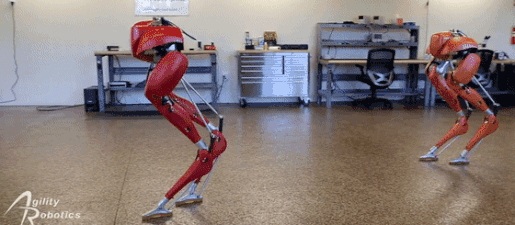
深度学习在图像分类、图像分割、动作识别、语义理解、围棋、Flappy Bird、Dota等许多领域的高度非线性任务学习的问题上，取得了巨大的成就，但是将深度学习应用于真实世界机器人，还存在许多挑战和困难，例如需要依赖在虚拟环境下长时间的加速训练、虚拟环境模型与真实世界存在差异、机器人硬件的磨损等等。
加拿大大不列颠哥伦比亚大学计算机系和俄勒冈州立大学动力机器人实验室的研究人员对此进行了探索。为了让双足机器人学会在不同的速度下平稳地行走，研究人员提出一种简单而有效的方法，奖励函数在每一次迭代中可以重新定义，来学习新的策略，从虚拟环境下获取5-10K样本，然后通过这些少量样本将强化学习和有监督学习结合，学习机器人行走策略，并更成功转移到真实世界的机器人。
20190505 Real-time 3D Human Body Motion Prediction
东京工业大学研究小组发布了一套格斗训练系统“FuturePose”，通过深度学习能预测 0.5 秒后对手的动作。通过从一个 RGB 相机捕获的图像中，从 30 fps（1帧= 1/30秒）图像中预测15帧后，即0.5秒后的动作，然后进行战斗训练。对战对手不同装束，而受训者可以戴 VR 头盔来同时观察对手的当前姿势和预测的0.5秒后的姿势。
20190413 人类史上首张黑洞照片发布
天文学家公布了人类史上首张黑洞照片。这颗黑洞就是M87星系中心的超大质量黑洞，它的质量是太阳的65亿倍，距离地球5500万光年。由事件视界望远镜（EHT）拍摄的黑洞照片。
20190407 波士顿动力定位于物流应用的Handle机器人硬件平台技术浅析
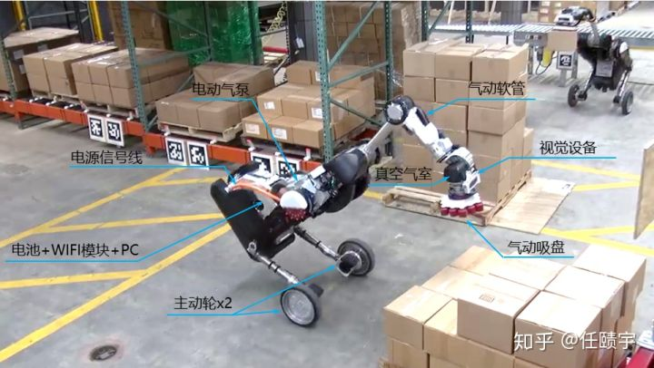
20190321 Robotic collectives inspired by biological cells
李曙光等人提出了一种机器人系统，它由许多松散耦合、随机移动、厘米级的组件组成。每个组件只能通过沿其半径摆动，通过伸展和收缩来移动。在这种振荡期间，组件的颜色代表它们的直径，绿色是最小的、蓝色是最大的；用于测试系统鲁棒性的故障组件用栗色表示。作者表明，他们的系统能够在躲避障碍物的同时，随着时间的推移，向环境信号(例如光源)表现出确定性的运动。
仿生物细胞群体机器人，其主要突破性研究成果包括：
- 该“粒子机器人”系统可以实现鲁棒的运动和物体移动，以及光导向运动和避障；
- 与已有的仿生机器人系统相比具有更高的可扩展性和鲁棒性；
- 证明了随机性为开发具有鲁棒的确定性行为大规模群体机器人系统提供了一种有希望的方法。
20190319 NVIDIA 推出 Jetson Nano 人工智能计算机
这款外观小巧但功能强大的 CUDA-X™人工智能计算机为运行现代人工智能工作负载提供472 GFLOPS（每秒十亿次浮点运算）的计算性能，并且具有高能效，但耗电量仅为 5 瓦。
- GPU：128 核基于 NVIDIA Maxwell™架构的 GPU
- CPU：四核 ARM®A57
- 视频：4K@30 fps（H.264/H.265）/4K@60 fps（H.264/H.265）编码和解码
- 摄像头：MIPI CSI-2 DPHY 通道，12 个模块和 1 个开发工具包
- 内存：4 GB 64 位 LPDDR4；25.6 GB/秒
- 连接性：千兆以太网
- 操作系统支持：面向 Tegra®的 Linux
- 模块尺寸：70mm x 45mm • 开发者套件尺寸：100mm x 80mm
20190309 驯服自动驾驶的长尾挑战
经典MIT的Deep Learning for Self-driving Car课程上，邀请到了Waymo首席科学家Drago Anguelov，分享题为“Taming The Long Tail of Autonomous Driving Challenges（驯服自动驾驶的长尾挑战）”，主要是讲在现实世界中的Long Tail现象，各种异常情况该如何收集、融合、发布和测试.
- 题目是“长尾”处理；
- 可以处理道路维修场景；
- 可以识别特殊车辆（警车/救护车/消防车）；
- 可以预防闯红灯的车辆；
- 可以对马路自行车行为轨迹预测；
- 通过NAS学习模型；
- 不完全依赖机器学习，可以利用专家知识（domain knowledge）；
- 不是E2E学习驾驶行为，而是Mid-2-Mid，就是最近的ChauffeurNet；
- 学习的行为预测有自适应性，比如激进的或者温和礼貌的；
- 仿真不能解决所有问题，仿真系统需要更多的agent model，要smart。
20190305 MIT Mini Cheetah Bot
MIT最新公开的新型迷你猎豹机器人是第一个能做后空翻的四足机器人。这只灵活的小豹只有20磅重，四条腿可以自然地弯曲和摆动，它还能在崎岖不平的地面上小跑，速度大约是普通人步行速度的2倍。
在这次升级中，猎豹被有意设计成不需依赖摄像头或任何外部传感器就能完成所有这些任务。它能灵活地 “感觉” 周围的环境，工程师们称之为 “盲眼运动”（blind locomotion），就像人能穿过黑漆漆的房间一样。
猎豹 3 能够无需视觉地爬上楼梯，穿过崎岖不平的地形，并且在遇到意想不到的外力时能够迅速恢复平衡，这都要归功两种新算法：接触检测算法（contact detection algorithm）和模型预测控制算法（model-predictive control algorithm）。接触检测算法帮助机器人确定某只腿从在空中摆动切换到踏上地面的最佳时刻。例如，如果机器人踩在一根细细的树枝上，而不是踩在坚硬沉重的石头上，它会采取怎样的反应 —— 是继续迈着步子走过去，还是向后退屈一下腿 —— 可以决定它是否能保持平衡。猎豹 3 的这种无需视力的运动能力也部分归功于模型预测控制算法，该算法可以预测某条腿在踏出一步后应该施加多大的力。当任何一只腿接触到地面并施加了特定大小的力，模型预测控制算法会马上计算在未来的半秒内机器人的身体和腿应该处于什么位置。
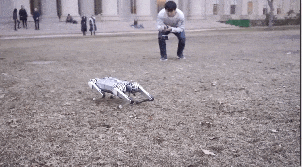
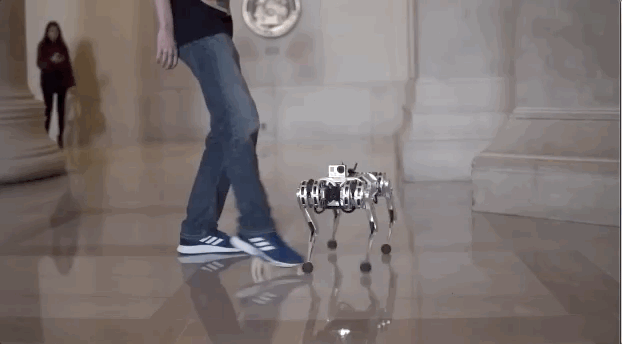
20190304 MIT Tech Review 2019年“全球十大突破性技术”
原文链接
2019 年《麻省理工科技评论》全球十大突破性技术榜单包括：灵巧机器人、核能新浪潮、早产预测、肠道显微胶囊、定制癌症疫苗、人造肉汉堡、捕获二氧化碳、可穿戴心电仪、无下水道卫生间、流利对话的AI助手共 10 大突破性技术。
Robot Dexterity: 重大意义：机器正在通过自我学习学会应对这个现实世界。如果机器人能学会应对混乱的现实世界，那么它们就可以胜任更多的任务。主要研究者：OpenAI（人工智能非营利组织）、卡内基梅隆大学、密歇根大学、加州大学伯克利分校 成熟期：3-5年
20190228 中国十大2018年度科学进展
2019年2月27日，科技部基础研究管理中心召开“2018年度中国科学十大进展专家解读会”，发布了2018年度中国科学十大进展，以下10项重大科学进展入选：
-
基于体细胞核移植技术成功克隆出猕猴
-
创建出首例人造单染色体真核细胞
-
揭示抑郁发生及氯胺酮快速抗抑郁机制
-
研制出用于肿瘤治疗的智能型DNA纳米机器人
-
测得迄今最高精度的引力常数G值
-
首次直接探测到电子宇宙射线能谱在1TeV附近的拐折
-
揭示水合离子的原子结构和幻数效应
-
创建出可探测细胞内结构相互作用的纳米和毫秒尺度成像技术
-
调控植物生长-代谢平衡实现可持续农业发展
-
将人类生活在黄土高原的历史推前至距今212万年
“中国科学十大进展”遴选活动由科技部基础研究管理中心牵头举办，至今已成功举办14届，旨在宣传我国重大基础研究科学进展，激励广大科技工作者的科学热情和奉献精神，开展基础研究科普宣传，促进公众理解、关心和支持基础研究，在全社会营造良好的科学氛围。
中国科学十大进展遴选程序分为推荐、初选和终选3个环节。《中国基础科学》《科技导报》《中国科学院院刊》《中国科学基金》和《科学通报》5家编辑部推荐了353项科学研究进展，所推荐的科学进展须是在2017年12月1日至2018年11月30日期间正式发表的研究成果。
2018年12月，科技部基础研究管理中心组织召开了中国科学十大进展初选会议，按照推荐科学进展的学科分布，分成数理和天文科学、化学和材料科学、地球和环境科学、生命和医学科学等4个组，邀请专家从推荐的科学进展中遴选出30项进入终选。终选采取网上投票方式，邀请中国科学院院士、中国工程院院士、973计划顾问组和咨询组专家、973计划项目首席科学家、国家重点实验室主任、部分国家重点研发计划负责人等2600余名专家学者对30项候选科学进展进行网上投票，得票数排名前10 位的科学进展入选“2018年度中国科学十大进展”。
20190221 Learning agile and dynamic motor skills for legged robots
摘要：足式机器人是机器人学中最具挑战性的主题之一。动物动态、敏捷的动作是无法用现有人为方法模仿的。一种引人注目的方法是强化学习，它只需要极少的手工设计，能够促进控制策略的自然演化。然而，截至目前，足式机器人领域的强化学习研究还主要局限于模仿，只有少数相对简单的例子被部署到真实环境系统中。主要原因在于，使用真实的机器人（尤其是使用带有动态平衡系统的真实机器人）进行训练既复杂又昂贵。本文介绍了一种可以在模拟中训练神经网络策略并将其迁移到当前最先进足式机器人系统中的方法，因此利用了快速、自动化、成本合算的数据生成方案。该方法被应用到 ANYmal 机器人中，这是一款中型犬大小的四足复杂机器人系统。利用在模拟中训练的策略，ANYmal 获得了之前方法无法实现的运动技能：它能精确、高效地服从高水平身体速度指令，奔跑速度比之前的机器人更快，甚至在复杂的环境中还能跌倒后爬起来。
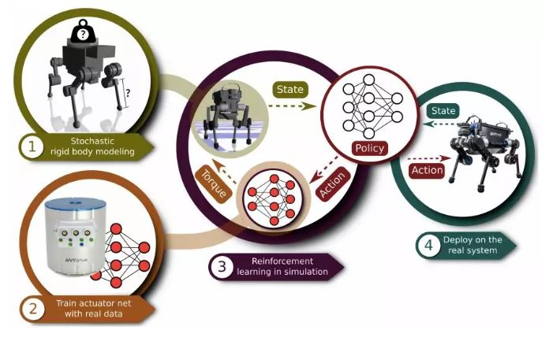
图 1：创建一个控制策略。第一步是确定机器人的物理参数并估计其中的不确定性。第二步是训练一个致动器网络，建模复杂的致动器/软件动力机制。第三步是利用前两步中得到的模型训练一个控制策略。第四步是直接在物理系统中部署训练好的策略.
20190219 Task Agnostic Self-modelling Machines
这项成果来自美国哥伦比亚大学团队，在经过35小时训练后，机器人创建了一套自我模拟，并利用自模拟器来考虑和适应不同情况，处理新任务，甚至能检测并修复机体损伤。这项成果于近日发表在Science Robotics上。
先制造了一个没有搭载复杂计算机结构、没有参照任何物理学、几何动力学相关知识的、与人体手臂大小相当的“铁手臂”，它有四个可以自由调节的关节臂，然后让这个“铁手臂”开始了长达35小时的随意运动……在运动的过程中，它需要收集大约1000个运动轨迹，每个轨迹包含100个运动节点，然后利用深度学习构建自我模型。在实验中，在允许机械臂根据运动轨迹自我调整的“可校准”模式下，它能以100%的成功率将多个小球夹起放入杯中。不仅如此，这个机器人还能检测自我损伤，通过自我调节后，继续处理任务。
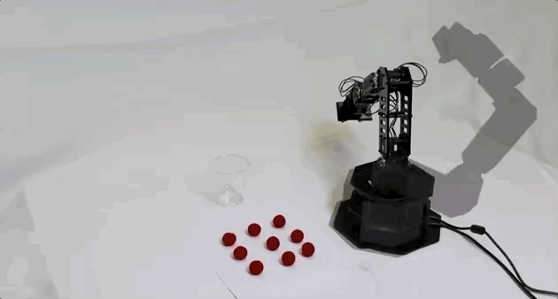